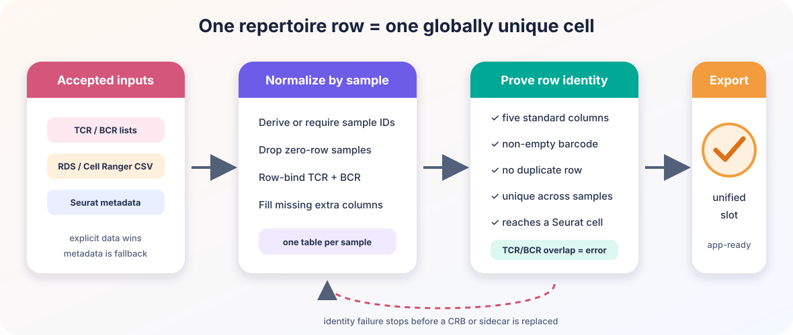

Data integrity from Seurat to a self-contained Cerebro app
Xuesong Wang
06 September, 2026
Source:vignettes/data_integrity_contracts.Rmd
data_integrity_contracts.RmdWhy this guide exists
A Cerebro app is the end of a chain:
Seurat assay -> complete expression matrix -> .crb (+ optional sidecar)
-> self-contained app bundle -> interactive analysesEach arrow changes representation. A plausible name is not enough to prove that the correct data crossed the boundary:
-
data.sample_amay be only one part of a Seurat v5 matrix; - two repertoire rows with barcode
AAAC-1may count one cell twice; - a
.crband its sidecar may be left disagreeing by an error late in the export.
CerebroNexus therefore uses one rule throughout the chain:
Resolve identity, validate completeness and uniqueness, stage the result, and only then begin replacing published files.
This overview explains how the three contracts fit together. Follow the linked topic guides for commands and troubleshooting.
Contract 1: one complete expression matrix
Seurat v5 can represent one logical layer as several physical layers:
RNA
├── data.donor_a
└── data.donor_bCerebroNexus does not choose a layer because its name merely starts
with data. It proves that candidate cell memberships form
one unique, disjoint partition of all assay cells and then joins that
partition on a local object.
An unrelated custom matrix such as data.imputed is
protected from JoinLayers(). A deeper complete split such
as data.imputed.donor_a/donor_b, requested as
data, is semantically ambiguous and stops with an
explanation instead of silently becoming normalized data.
Every operation that describes the complete object applies the same final check:
unique matrix cells == unique Seurat object cellsIf the sets match but order differs, CerebroNexus reorders the matrix once. Missing or unexpected cells are an error.
For the complete algorithm, diagrams, performance limits, and troubleshooting, see Seurat v5 layered assays.
Contract 2: one repertoire row per cell
The immune-repertoire module treats a row as one cell carrying one clonotype. That only works if barcode identity is unique.

The canonical structure is:
repertoire <- list(
donorA = data.frame(
barcode = c("donorA_AAAC-1", "donorA_TTGC-1"),
CTgene = c("TRAV1.TRAJ1", "IGHV1.IGHJ1"),
CTnt = c("TGT...", "TGC..."),
CTaa = c("CAV...", "CAR..."),
CTstrict = c("TRAV1;CAV...", "IGHV1;CAR...")
)
)The contract requires:
- one named data frame per sample;
- all five standard identity/clone-call columns;
- each required column is a one-dimensional vector with one value per row;
- a non-empty barcode in every row;
- no duplicate barcode in a sample;
- no barcode reused by another sample;
- no cell present in both TCR and BCR inputs.
TCR and BCR tables for the same sample are row-bound only after the overlap check. Zero-row sample tables are treated as absence.
Barcode overlap with the Seurat object
No overlap is an error: the app could not attach any receptor to any
cell. A common cause is combineTCR(samples = ...) adding
sample prefixes while the Seurat cell names were not changed with
RenameCells().
Partial overlap is ordinary after cells have been filtered, but orphan rows must not remain analysis units. They are removed with a warning before storage. A whole unmatched sample is therefore removed; if every sample is unmatched, the operation stops.
Unified and legacy data
A valid @misc$immune_repertoire is authoritative. Stale
legacy tcr_data/bcr_data does not block
it.
When only legacy slots exist, new exports validate and merge them into the unified field while retaining the originals. Existing CRBs need re-exporting because R6 methods are serialized into the file.
See Immune repertoire analysis for Cell Ranger inputs, metadata extraction, scRepertoire integration, and module use.
Contract 3: stage CRB and sidecar replacement
An export can produce:
embedded -> dataset.crb
h5 -> dataset.crb + dataset.h5
bpcells -> dataset.crb + dataset.bpcells/Both artifacts are written in a private sibling stage. On POSIX
systems the stage is mode 0700, new H5/CRB files are
0600, and new BPCells directories are 0700; an
existing CRB keeps its previous mode. Only those POSIX mode bits are set
or preserved. Ownership, ACLs, extended attributes, and security labels
remain the deployment system’s responsibility on every platform. Later
validation of repertoire, HLA, markers, projections, and spatial data
happens before publication.
Before replacing an existing sidecar, the exporter reads the current CRB’s plain backend field without calling a serialized getter. Replacement proceeds only when that descriptor claims the exact sidecar path and type; an unrelated same-name file is a collision and remains untouched. For BPCells, the new matrix is reopened at its final location before serialization. If publication fails, the previous CRB and sidecar are restored on a best-effort basis. A successful backend switch removes the previous sidecar only after the new CRB is committed.
This is not an atomic transaction across two paths. Stop every app or other reader using the export before replacing it: a live reader can otherwise load the old CRB during the sidecar swap. Process termination and concurrent writers are also outside the guarantee. A failed restoration is reported rather than hidden.
External modes require a portable .crb filename. Empty
stems, Windows reserved names, and filesystem-invalid punctuation are
rejected before any artifact is written.
What errors versus warnings mean
Errors mean that continuing would reinterpret identity or publish an unusable artifact:
- ambiguous/incomplete expression partition;
- matrix/object cell mismatch;
- target-path collision;
- missing or escaping bundle input;
- malformed or duplicate repertoire identity;
- zero repertoire/cell overlap.
Warnings mean that the result remains interpretable:
- an explicitly allowed expression fallback, such as
datatocounts; - repertoire rows or samples absent from the object were removed;
- publication succeeded but an old backup could not be removed.
Recommended workflow
- Keep source Seurat layers in memory for export, or materialize every intended split layer first.
- Export to a
.crbpath and chooseembedded,h5, orbpcells. - Add repertoire data through
addImmuneRepertoire()rather than assigning an unchecked shape. - Keep each external matrix beside its CRB under the serialized backend name.
- Build the app with
createShinyApp()and treat any error it raises as a request to fix identity, not as a file-copy inconvenience. - Move or deploy the resulting app directory as one unit.